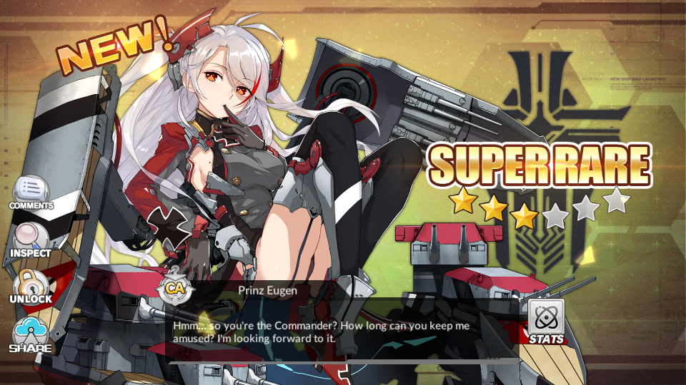

Prinz Eugen
| 
|
Prinz Eugen is one of the antagonists of the game Azur Lane
and the personified counterpart of the real KMS Prinz Eugen heavy cruiser. The player meets her
for the first time as the first boss in the game's tutorial of Japanese server, where she and KMS
Bismarck are fought. She does not appear in the campaign mode of the game, which focuses on the
Pacific Ocean battles (battles in which Prinz Eugen rarely participated). As a playable character,
she is a super rare ship who can be built, obtainable as a login reward on the 8th day of connection,
and she was droppable during the stage of an event. She appears arrogant, sometimes playing with the
feelings of the commander or bashing Hood during battles at her side. She also loves alcoholic drinks,
even being depicted as drunk in one of her skins. Some other shipgirls also make reference to this. |